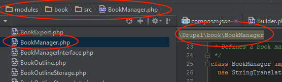
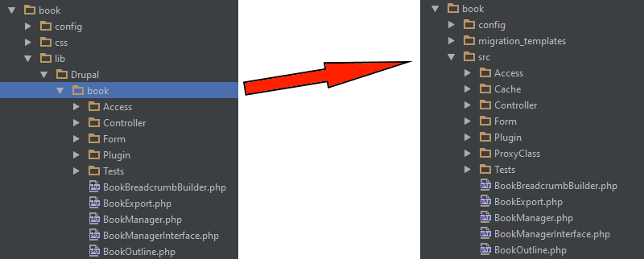
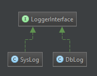

What PHP-FIG means to Drupal
An account of PHP history and renaissance
 My usual photo
My usual photo
History
My PHP story
Open Source?
- My own components.
- Where to share code?
- Didn't bother.
Frameworks? CMS?
Move on...
Drupal
Code I could get onboard with

Hooks? Hmmm...

Drupalism
PHP 5
Better object oriented programming support
PHP 5.3
- Introduced namespaces.
- Better code organization.
From NIH to PIE

PHP Renaissance
PHP-FIG

PHP Standard Recommendations
- PSR-4,
PSR-0 - PSR-3
- PSR-7
- Other PSR's
- Future PSR's
Autoloading

PSR-0
File: .../lib/Drupal/book/BookManager.php
namespace Drupal\book;
class BookManager {
...
}
Shift to PSR-4

PSR-3

Benefits
Collaborate
- Any logger implementing PSR-3
- Any HTTP client implementing PSR-7
Reuse
- Symfony, Zend, Doctrine, Twig, and other components.
- Stack Builders to add functionality as middlewares.
Maintain less code
Focus on what makes Drupal "Drupal"
The sites that you build have
- Clean code
- Maintainable code
- Testable code
Thank you!
- @hussainweb
- Please provide feedback at https://events.drupal.org/node/2446
- Axelerant